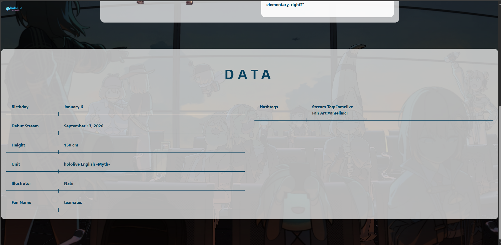
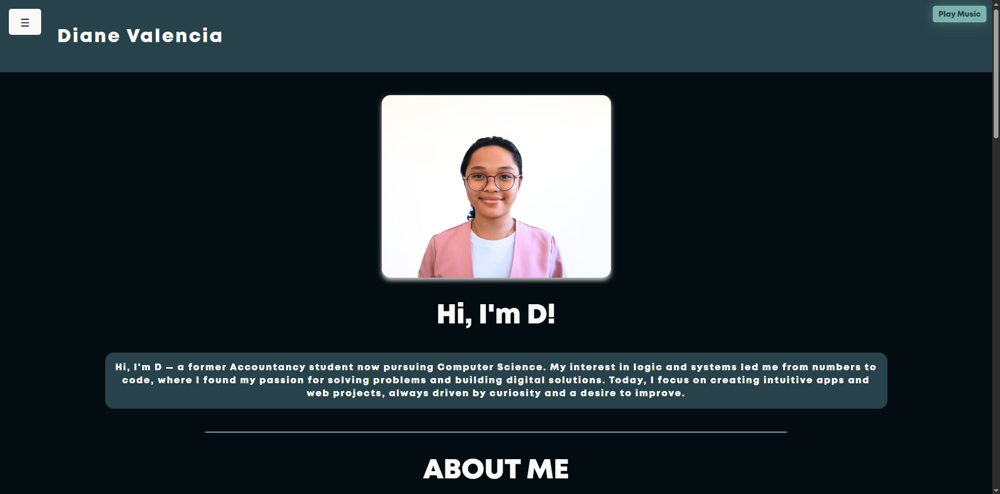
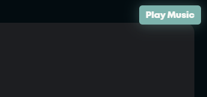

Midterm Exam: Lecture
ABOUT
The midterm exam covered essential concepts from both HTML and CSS. It included multiple-choice questions and true-or-false statements that tested my knowledge on HTML structure, tags, metadata, multimedia elements, CSS selectors, properties, the box model, positioning, inheritance, and responsiveness. The exam was divided into two parts, focusing first on theoretical understanding and then on core behavior of HTML/CSS through application-based statements.
WHAT I LEARNED
After taking the exam, I gained a clearer understanding of the foundational rules that govern HTML and CSS. It helped reinforce important details like the correct usage of tags, how CSS styles are applied and inherited, and how different elements behave on a webpage. I also became more confident in identifying the right selector types, differentiating between types of CSS (inline, embedded, external), and recognizing the role of properties like font-size, text-transform, and box-shadow. This exam helped me review and solidify everything I’ve learned so far in web development.
Homepage
Hover Effect: Amelia Watson's card turns yellow
Hover Effect: Ceres Fauna's card turns green
Hover Effect: Nanashi Mumei's card turns brown
Hover Effect: Tsukumo Sana's card turns purple
Hololive English: Clickable, returns to homepage
Amelia Watson's Page:

Ceres Fauna's Page:
Nanaashi Mumei's Page:
Tsukumo Sana's Page:
ABOUT
The midterm lab exam was focused on debugging an entire website, from its HTML structure to CSS styling. It tested our ability to identify and fix code errors, ensuring proper layout, design, and responsiveness.
WHAT I LEARNED
I learned the importance of paying close attention to detail when debugging, as even small mistakes can break an entire layout. I also improved my understanding of HTML structure, CSS syntax, and how both work together to build functional and visually consistent web pages. This exam strengthened my problem-solving skills and my ability to write cleaner, error-free code.
Final Examination: Lecture
ABOUT
The final exam covered essential topics in web development and programming, focusing on practical understanding and real-world application of key concepts. The lecture and test materials were structured into multiple choice and true or false questions, targeting three major areas: HTML & CSS Fundamentals, JavaScript Essentials, and Browser Behavior & Design Principles.
WHAT I LEARNED
In taking our laboratory written exam, I learned key front-end development concepts such as using box-shadow, clear: both, and responsive design principles like the viewport meta tag and Bootstrap’s grid system. I also deepened my understanding of JavaScript fundamentals, including const, typeof, and the difference between == and ===. Overall, the exam helped me strengthen my skills in writing clean, responsive, and interactive web code.
Final Exam: Laboratory
Portfolio
Tap me to visit the site!
Homepage
About Me Section
Mentality, Goals, and Vision Section
Contact Information
Play Sound: Hover Effect + Functioning Button
Hover Effect on Switch to Light Mode
Hover Effect: Home
Homepage in Light Mode
Hover Effect: Quizzes
Quizzes Page
List of Quizzes: Quiz No. 1
Quiz No. 1: Content and Learnings
Quiz No. 2
Quiz No. 2: Content and Learnings
Quiz No. 3
Quiz No.3: Content and Learnings
Quiz No.4
Quiz No. 4: Content and Learnings
Quiz No. 5
Quiz No. 5: Content and Learnings
Quiz No.6
Quiz No. 6: Content and Learnings
Quiz Page: Light Mode

Activities Page
My Growth
Activity No.1: Activity + Content and Learnings
Activity No.2: Activity Work
Activity No.2: Activity + Content and Learnings
Activity No.3 Showcasing of Activity
Activity No. 4 + Link
Working Link
Tested Link
Activities Page: Light Mode
Examinations
Midterm Exam: Lecture
Midterm Lecture Exam: Content + Learnings
Midterm Laboratory Exam: Content + Working Link
ABOUT
For the finals lab exam, I created my own portfolio website by following Sir Cole’s instructions and applying everything we learned in class—from HTML and CSS to JavaScript. I chose to challenge myself by not using any CSS frameworks like Bootstrap, even though they were allowed, to fully test and apply my foundational skills in web development.
WHAT I LEARNED
I learned the importance of writing clean, well-structured HTML and CSS, where even small errors can break the entire layout. This exam improved my attention to detail and deepened my understanding of responsive design and JavaScript interactivity. I also realized that planning ahead—such as creating a content board or wireframe—makes the coding process more organized and efficient, helping avoid confusion and ensuring a smoother workflow in future projects.